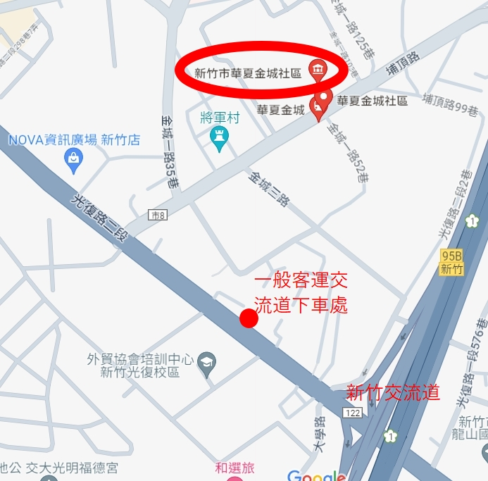
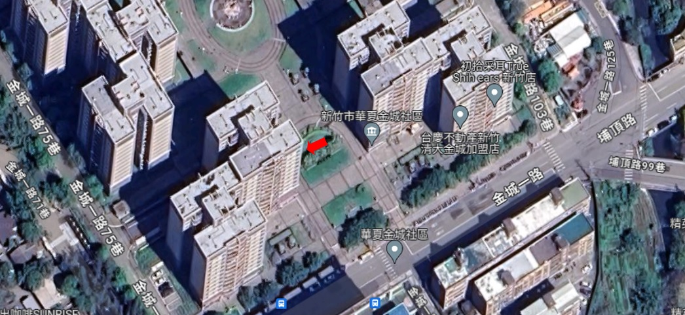
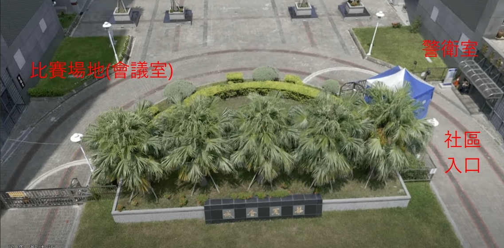

《2024 新竹晉段賽》
宗旨：提供優質比賽環境及升段管道，並藉由比賽提升棋力
主辦：台灣五子棋協會、新竹棋會
時間：２０２４年６月３０日（週日）
地點：新竹市東區金城一路97號＜新竹市華夏金城社區 一樓會議室＞
主辦人：劉邦沛 0982196440
●報名方式
限無五子棋段位者參加，請先熟悉塔拉規則及比賽需知，採網路報名
最後報名日為 ２０２４年６月２８日，屆時如未滿 8 人會另行通知退款，滿 8 人可持續報名
報名費５００元
銀行：中華郵政（銀行代碼 700）
帳號：00610970197390
戶名：劉邦沛
●賽制
１、使用瑞士五輪積分制，由電腦決定開局方。
２、採塔拉規則（五次交換規則），基本時限２５分，每手加３０秒，可參閱影片教學。
３、比賽進行過程，雙方均須使用記譜紙記譜。
●賽程
09：00 報 到
09：10 主辦人致詞、選手抽籤、規則講解
09：30 第一局
11：00 第二局
午 餐
13：00 第三局
14：20 第四局
15：40 第五局
頒 獎
●注意事項
１、超過報到時間未報到者，視同取消，不退報名費。
２、每輪棋局結束後，請檢查記譜紙是否記錄完整，舉手示意裁判登記成績。
３、對局中對於規則或禁手判斷有疑慮時，可請示裁判。
４、比照一般正式比賽規則，若遇無法處理之情形，由大會裁定。
●獎勵辦法
１、冠軍頒發獎金 1600 元、獎狀一張。
亞軍頒發獎金 1200 元、獎狀一張。
季軍頒發獎金 1000 元、獎狀一張（感謝柑棧茶館贊助）。
２、依台灣五子棋協會晉段辦法，晉段組８人取１位晉段，12 人取２位晉段，之後每多８人多一位晉段名額，晉段者需繳交初段證書費 600 元，待證書製作完成後，會直接寄送至提供的收件地址。
３、棋譜會上傳國際連珠協會官網 RenjuNet，計入台灣排名。
●規則
●塔拉規則（又稱五次交換規則）
１、黑方在天元下第一子，白方可選擇是否交換棋子顏色（以下簡稱交換，即可決定下一子由誰下）。
２、白方在中央 3×3 區域內下第二子，黑方可交換。
３、黑方在中央 5×5 區域內下第三子，白方可交換。
４、白方在中央 7×7 區域內下第四子，黑方可交換。
５、黑方在中央 9×9 區域內下第五子，白方可交換（至此黑白方確定）。
開局階段結束，按連珠規則繼續進行。
●日式規則（連珠規則）
○黑方先下、白方後下，輪流下子
○先將五顆子連成直線、橫線或斜線者為勝
○黑方有三種禁手，禁止使用長連，雙四，雙活三，下出則判黑敗。白方沒有任何限制長連也算勝
○黑方下出五同時出現禁手，則判黑勝
○雙方認為無法獲勝時，可協議和局
○可以放棄下子（PASS），若雙方連續放棄則判和棋
●比賽地點及交通資訊
外縣市可搭乘客運在新竹交流道下步行五分鐘，或駕車前往，周邊有收費停車格


